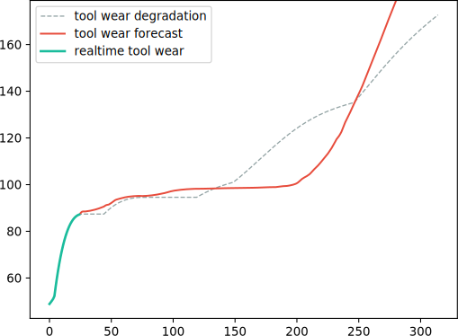
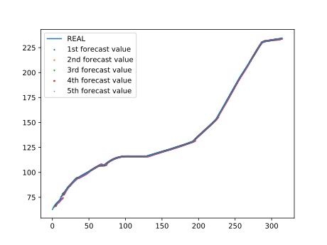
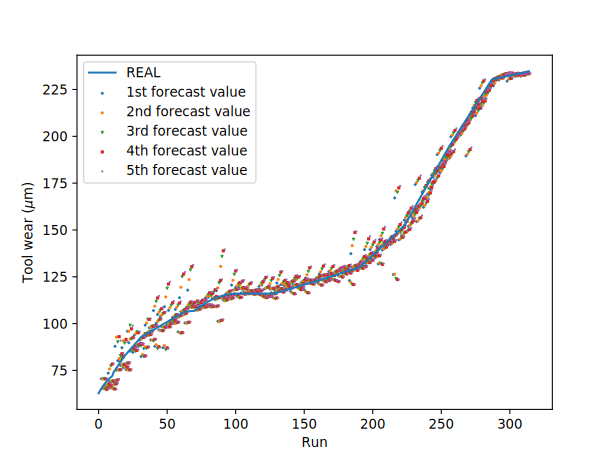

The First
Tool wear forecasting
Accurate
Like model we developed before, high-accuracy is still our top attention. By remember-forget gate mechanism, methods replacing Markov chain get great performance in both train and test dataset
Universal
The most thrilling point of this model is its powerful inference and generality. There is little performance difference in train and test data, which indicates the model could learn tool wear degradation well and infer accurately new data without over-fitting problem.
Scalable
By working with CNN monitoring system, it's easy for forecasting system to correct its output realtime. Also it can promote fiercely both monitoring and forecasting performance introducing differential constraint. This closed loop system including monitoring and forecasting shows great practices in real manufacturing.
We train a LSTM-unit recurrent neural network to forecast upcoming tool wear by history
The network takes as input a time-series of historical tool wear, and outputs a time-series of future tool wear. The input and output time could be adjusted according to forecasting task(emergency ,short time or long time). The trainable parameters in this recurrent neural network is fewer and the model can train or run on both CPU-only and GPU-accelerate computing environment. It enables widespread usage in embedded system which is not good at computation.
To cut computation cost of this fragile model, very ordinary methods are used. Since tool wear has fewer dimension, not much tricks are taken into use.
Extend forecasting period by self-reference
When model's output time is not less than input one, the predicted tool wear could be seen as historical data to drive the same model for further tool wear. Since output is larger than input, the recursive process is unstoppable. After that, native forecasting time will be extended.
However, there is no free lunch in this algorithm. Like snake eat itself, all poison loss will be accumulated then model dies. Eventually, result of self-reference won't longer be accurate. Even though, large-scale self-reference's result could indicates tool wear tendency in future.
By that, it's easy for model to prolong its forecasting time while model can hold its accuracy. However, from short-time to long-time forecast model, ratio of self-reference could be so large that recursive algorithm's error is beyond imagination. Building a native model according to machining requirement is still the best choice.

short-time(takes 2 time, outputs 5 time) model's self-reference result

The five forecasting value by run
High-accurate upcoming tool wear forecast
The LSTM RNN model gets a outstanding performance at both train and dataset of PHM 2010 dataset. The MSE is lower than 1. It's indicates that a perfect upcoming tool wear will be given if a accurate tool wear is offered. According to latest technology, some optical method could help us get real-time tool wear. Implementing that will enable model appliance in real machining condition.
Real-time correction by CNN to enhance forecasting value
As is said before, there aren't many machines equipped with optical system. Under that circumstances, no in-process tool wear is given. So another approach is in demand.
We have developed a high-accurate monitoring model before. It's time for that model to provide productivity now. We could use signal to collect machining condition information and feed that model to predict current tool wear. After receiving predicted tool wear, it's easy to implement this forecasting technology into widespread use. Optical sensor is hard to equip while sensors needed in monitoring model is easy and cheap. So it offers a practical way to apply in real product.
But there is a error in monitoring tool wear, its error will be passed to forecasting model and cause a considerable error in forecast result. The discrete point in forecast graph illustrates this error pass result. Luckily, since we can get multiple prediction before current condition, we can use historical forecasting value to correct nowadays data. So we maintain a forecast list recording historical forecast, and use median or average value as final decision. It could strongly impede discrete points and promote final forecast level.
By considering stateful(RNN) and stateless(CNN) prediction, the final decision is rather accurate and follows the degradation rule. Because no time label implicitly or explicitly given, in degradation given by CNN model, tool wear decrease at some period. In order to avoid that stupid mistake, RNN could help promote final result with introducing time dependency relation.

Using CNN without any correction, so many discrete point while most of others are accurate.

Using CNN with median or average correction, most forecast value is accurate and fluctuation is hindered.